Godot3游戏引擎入门之六：制作TileMap瓦片地图

一、前言
收到一个高兴的消息： 2018 年 Github 最新统计出炉， Godot 是所有项目里增长速度最快的第三位！所以，我还是非常看好它的，哈哈！链接在此： Fastest growing open source projects ，截图如下：
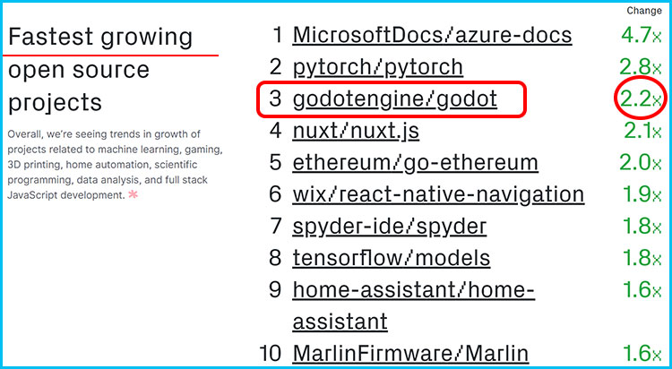
吹逼结束，本着承上启下的精神，本篇一起来学习并打造一个“美丽壮观”的游戏世界。使用的工具是 Godot 中的 TileMap 瓦片地图节点。注意：本系列文章包括本篇依旧使用 Godot 3.1 预览版讲述故事的经过，但这并不影响学习使用 Godot 3.0 版本中的瓦片地图制作，不过在此我要提醒的是：预览版中 TileMap 新增了一些强大且实用的功能，这些我会在后面讲解，然后请记得在使用这些新功能的时候，务必时刻保存你的游戏项目，不然有可能因为 Crash 发生奔溃而前功尽弃！嗯，预览版还是有点小 Bug 的， Good luck!
主要内容： Godot 2D 中瓦片地图 TileMap 的制作和使用
阅读时间： 10 分钟
永久链接：http://liuqingwen.me/2018/10/19/introduction-of-godot-3-part-6-make-tile-map-in-godot/
系列主页： http://liuqingwen.me/introduction-of-godot-series/
二、正文
本篇目标
- 了解瓦片地图的一些理论知识
- 使用图片制作瓦片集 TileSet
- 使用 SpriteSheet 制作瓦片集 TileSet
- 介绍 Godot 3.1 中 TileMap 的一些新特性
TileMap介绍
要打造一个好的 2D 平面游戏，没有一个好的游戏地图，那是万万不行的！你可以没有悦耳的背景音乐，可以没有花哨的粒子特效，没有动人的剧情设计，但是你至少得有一个完整的游戏地图场景来证明你那“伟大”的游戏的存在吧？！在 2D 游戏中，要制作游戏地图相对来时还是很简单的，特别是涉及多个关卡地图，我们通常都是使用 TileMap 瓦片地图来实现， TileMap 操作简单，效率也高，支持的软件完善，很多游戏都采用它，比如我们小时候耳熟能详的一些“小霸王”游戏：超级玛利亚、坦克大战、魂斗罗等等。
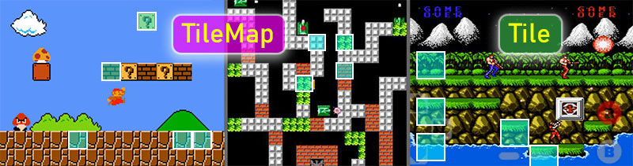
瓦片地图，简单地说就是一个个瓦片堆积起来的一个地图。如果你有 iOS 游戏开发经验，熟悉 SpriteKit 的话，那么你肯定对 TileMap 非常了解， Xcode 对瓦片地图的支持非常完善，功能很强大也易于上手，缺点是 Xcode 只支持 Mac OS 或者 iOS 系统。另外，熟悉 Unity3D 的朋友们也知道，在 Unity 2018 版本之前，使用 Unity 制作 2D 游戏的地图也是很不方便的，如果你想在 Android 或者 Window/Linux 等其他操作系统上开发游戏，那么你需要使用其他的第三方软件来辅助制作地图了。
这里我强烈推荐一款开源软件名为 Tiled ，功能非常强大！使用超方便！能很好地支持并导出你设计好的地图到其他游戏引擎中使用，比如配合 LibGDX 框架开发跨平台 2D 游戏。本节的瓦片地图图片就是从 Tiled 软件自带的例子中拿过来的，建议大家了解一下这款软件，有兴趣的可以玩一玩，对瓦片地图的制作和了解还是有帮助的。 :smiley:
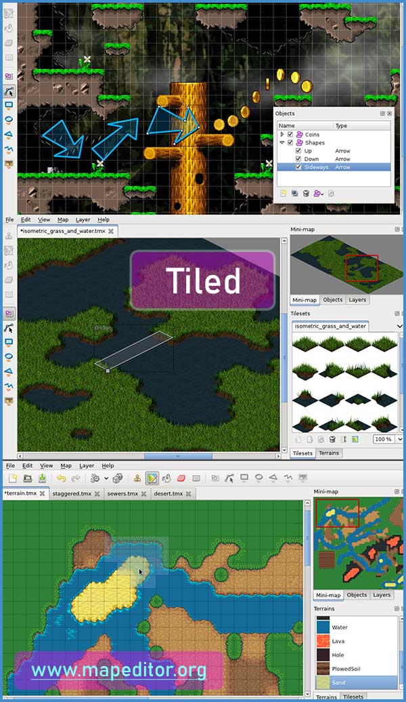
一个游戏场景就是一个简单的世界，我们可以为这个世界添加很多有趣的元素，让玩家有兴趣去探索，这里我们使用瓦片地图来制作我们的游戏场景，实际上，它是由很多小瓦片组成，当然，完全可以根据情况再添加一些背景，这些小瓦片我们称之为： Tile 。瓦片可以很简单，也可以非常复杂，但是在同一个游戏世界里其大小都是统一的，瓦片的类型主要有三种类型： 90° 直角俯视地图（ Orthogonal/Square ）、45° 等距斜视地图（ Isometric ）、等六边形地图（ Hexagonal ）。这三种类型在 Godot 中都是支持的，本篇文章我们主要讨论第一种类型，也是最常用的一种类型吧。 :grin:
制作TileSet
理论到此结束，撸起袖子开始干起！要打造瓦片地图，我们首先需要准备好所有的瓦片——也就是所谓的 TileSet 瓦片集。在 Godot 中制作瓦片集是非常简单的，我这里介绍常用的两种方式，以及第三种：利用 Godot 3.1 中瓦片地图新特性快速打造自动瓦片地图集！
第一种方式：使用单独的图片制作瓦片
第一种方式算是比较古老的一种方法了，在图片数量比较少的时候我们可以选择这种方式，快捷又方便。首先我们需要准备一些相同大小的图片：
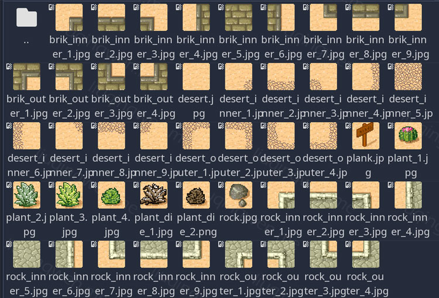
接下来，我们需要把所有图片制作成一个一个的 Sprite 精灵节点，这些节点最好是放在一个单独的游戏场景中，方便我们日后编辑。这里我单独创建一个名为 TileSet_Sprites 的游戏场景，然后把所有瓦片图片资源直接拖拽到场景中，并选择 Sprite 方式创建所有的节点。接着使用 Godot 菜单直接把场景中的所有 Sprite 节点转化为瓦片，制作 TileSet 瓦片集资源。在菜单栏中依次选中： Scene -> Convert To -> TileSet ，选择项目中某个位置保存资源为 tileset_sprits.tres ，一键完成制作我们所需要的瓦片集，既简单又快捷！
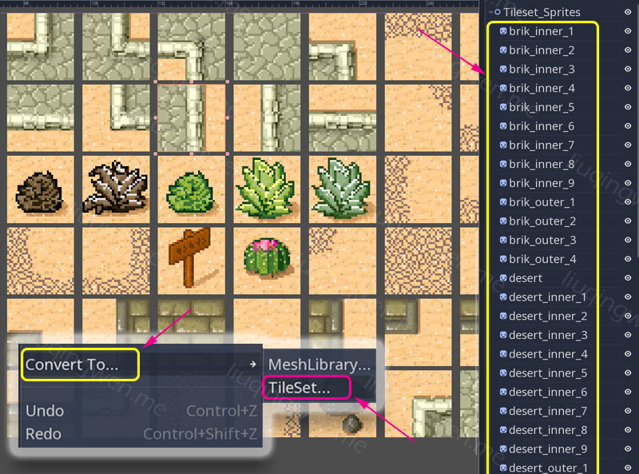
瓦片集准备好了，下一步就是使用它来制作你那伟大的游戏地图了！我们制作地图的节点叫做 TileMap 瓦片地图，使用也很简单，只要把 TileSet 资源添加到 TileMap 即可。首先创建一个主场景，在根目录下添加一个 TileMap 地图节点，注意，这里一定要设置好地图的单元尺寸，即 Cell 属性，示例中瓦片尺寸都是 32x32 像素，所以按此设置即可。接着在 Tile Set 属性菜单下点击 Load 加载我们刚才制作完的瓦片集资源 tileset_sprits.tres ，这时你会看到所有的小瓦片都出现在编辑器中了，选中任意一个瓦片，开始你的艺术创作吧，骚年！ :sunglasses:
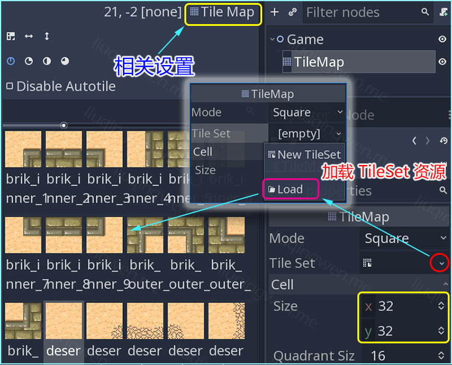
第二种方式：使用图片合集制作瓦片
当我们制作的地图元素非常多的时候，第一种方式明显不合常理了！图片过多导致文件难以管理，加载性能也会下降，这时候我们一般会把图片制作成 SpriteSheet 图片精灵集，这样既能减少文件数量，方便管理，又能提高加载速度和游戏的性能，关于 SpriteSheet 的原理我推荐大家到 TexturePacker 软件官网上浏览开发者的相关文章： What is a sprite sheet? ，这篇文章图文详细介绍了什么是 SpriteSheet ，以及它的优势和原理。
除了图片资源形式不同，其他原理和第一种方式并没有什么不一样：我们把单张 SpriteSheet 图片转化为一个一个的 Sprite 节点，然后一键转换为 TileSet 资源就可以了。理论如此，但在操作过程中会有一个问题：一张大图由很多的小图拼成，这些小图需要制作成一个个的 Sprite 节点，那么如何精确的把这张大图划分为大小统一的小图呢？这样做工作量岂不是比第一种方式要大很多？——别急， Godot 肯定想到这点了，既然大小统一，我们只需要开启 Snap 吸附功能就可以轻松完成区域划分了！具体操作在场景窗口的上方菜单栏选项里，打开吸附功能，并设置相关参数，然后就可以精确地进行相关操作了：
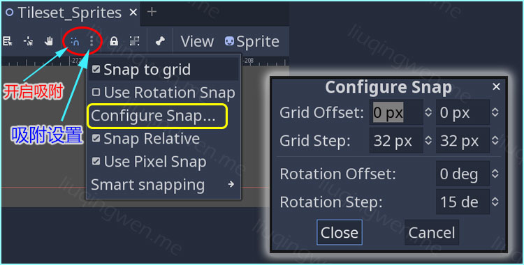
停！！！貌似这并没有什么卵用啊？是的，这个吸附功能只在场景编辑操作中适用，和我们现在要制作的精灵节点并没有半毛钱关系，不过原理是一样的。创建一个 Sprite 节点，把 SpriteSheet 大图拖拽到 Texture 属性下，然后勾选开启 Region 特性，打开 TextureRegion 编辑工具窗口，吸附功能就在这个窗口中进行设置。注意：我所使用的这张图的每一个小图片都有偏移，偏移像素为 1 个像素，所以需要在 Grid Snap 网格吸附选项里进行相关设置。具体操作如下动图：
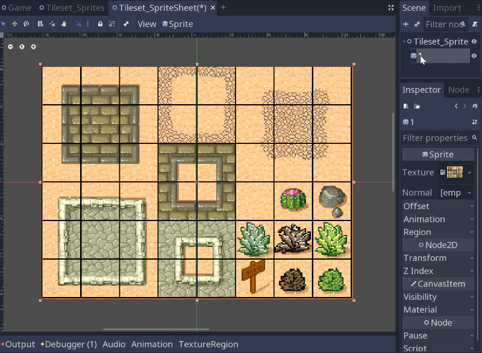
虽然我只操作了两张图，不过还是蛮快的，只要按住 Ctrl + D 复制一下节点，利用吸附功能框选一下 Sprite 的材质区域即可，付出一点耐心，很快就能把所有节点制作完成，最后和第一种方式一样，一键把场景转化为 TileSet 资源。在游戏主场景中，再创建一个新的地图，隐藏刚才的创建的地图，选择我们新建的 TileSet 资源进行地图绘画，效果如下，注意我框选的几个角落：
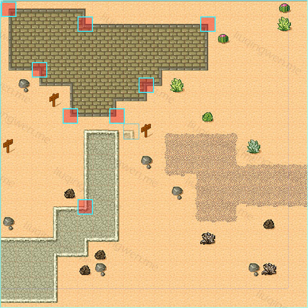
第三种方式：新版本中瓦片地图新特性
终于轮到新版本中的地图新特性了！这种方式最为方便，也是功能最强大的一种方式，操作流程也与上面两种方式截然不同。再次提醒一下：在使用 Godot 3.1 预览版中的 TileMap 新功能的时候，务必时刻保存你的游戏项目，因为预览版还不够稳定，有可能会产生意想不到的奔溃，牢记牢记！
第一步，使用瓦片地图之前，我们需要手动创建一个空的 TileSet 资源，并保存到合适位置：
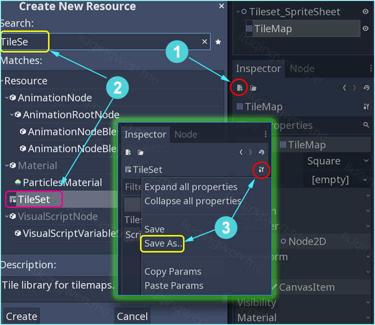
记住，这种方式同样适用于其他资源的创建。第二步就是愉快地使用 Godot 3.1 版本中的地图新特性了，使用新功能快捷创建一个强大的自动地图集。啥叫自动地图集？参考上面的那张效果图，注意几个角落，所谓的自动地图集，顾名思义就是画地图的时候不需要手动去添加那八个角落了， Godot 自动帮我们完成，是不是很方便？
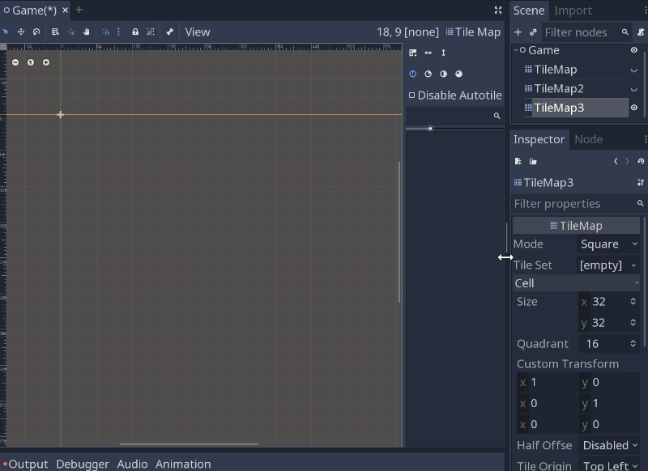
如果上图看不清可以查看大图： Godot 3.1 自动地图集操作详细动图。另外， TileMap 新特性中的有些功能是我们没见过的，比如，我们制作 TileSet 范围就是勾画 Region 区域，而 Bitmask 区域则是告诉 TileMap 如何自动完成整片地图的绘制， Priority 代表图片出现的概率， Icon 用来设置自动地图图标，还有我们后续游戏场景中会使用到的碰撞功能： Collision 碰撞区域设置，详细说明我在下图中都勾选出来了。总之，这么多新特性，大家可以多做一些尝试。 :smile:
{kind=link}
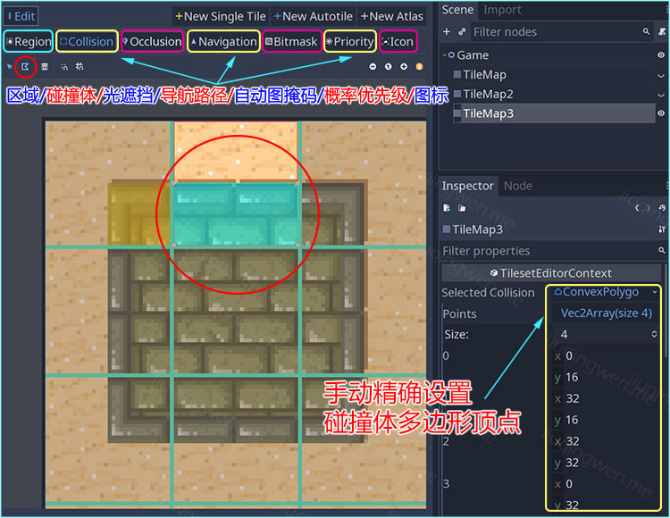
其他说明
这里我们只是简单地尝试了一下 Godot 中的瓦片地图制作，后续有机会我还会介绍如何在瓦片地图上添加一些其他物理特性，比如光照遮挡，或者添加真正的碰撞体，以实现游戏世界中的墙壁、地面等。
最后， Godot 3.1 中还有一个辅助小特性，可以设置瓦片集合 Atlas ，即一组瓦片组成一个集合，方便地图绘制，如下图：
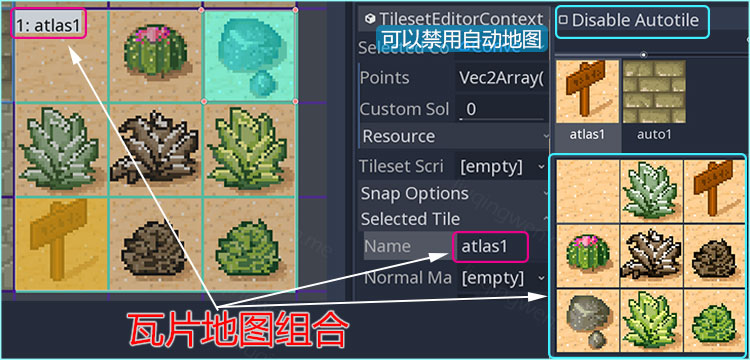
附加知识：关于旧版本 Godot 中的瓦片地图绘制，如果不熟悉可以先看看 Xcode 中的关于瓦片地图的一些标记：

这里有一个例子，如何画一片海洋区域：
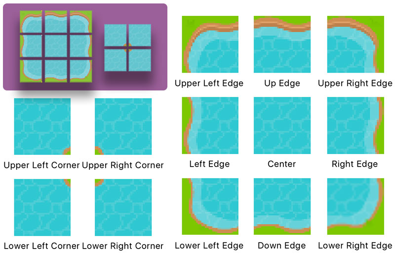
三、小结
本篇就这样利用多图完成了，不知道读者朋友们看完有啥感想？如果你能坚持从我的 Godot 系列第一篇文章读到本篇文章，那么非常感谢你的阅读，其实我最近更新的速度越来越慢，写完一篇文章至少要耗费我 3 天的闲暇时间，这篇文章更是花费了我一周，因为平时要工作，闲余时间还不一定有空，所以，等待更新的朋友要耐心点了。读完，我相信你应该会和我感受一样： Godot 必定能火！哈哈！最后，附上 InfoQ 中关于 Github 的最新统计信息报告： GitHub发布史上最大更新，年度报告出炉！
原创实属不易，希望大家喜欢！ :smile:
我的博客地址： http://liuqingwen.me ，欢迎关注我的微信公众号：